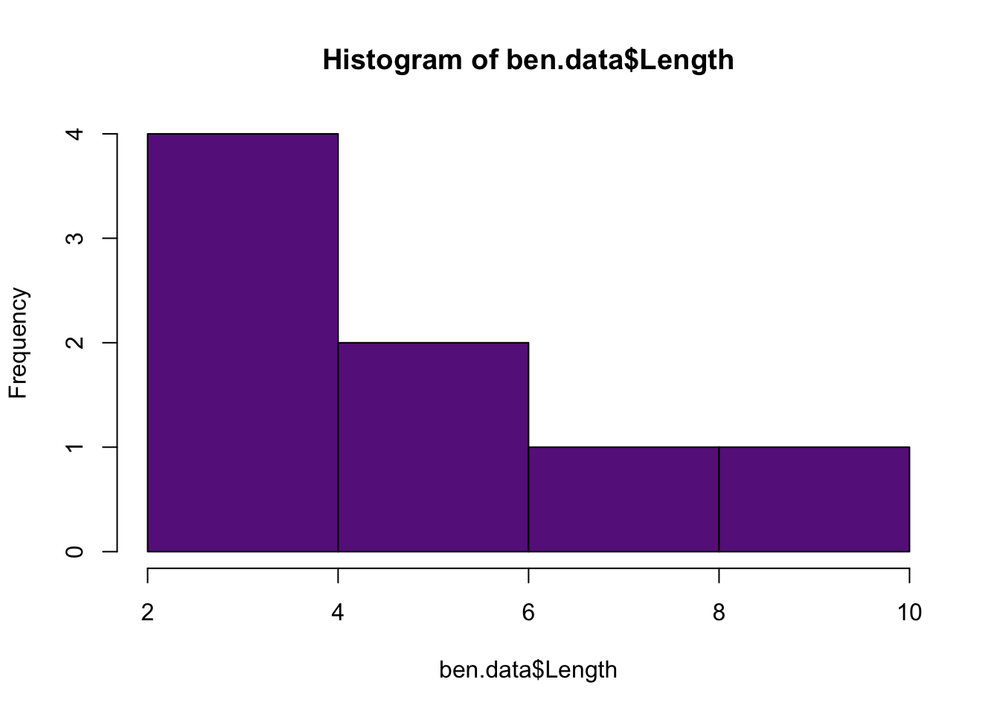
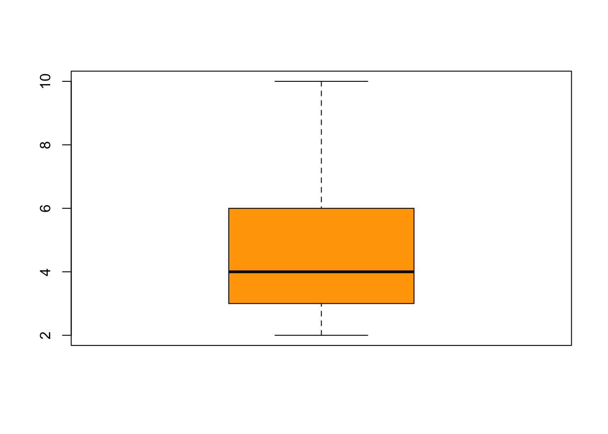
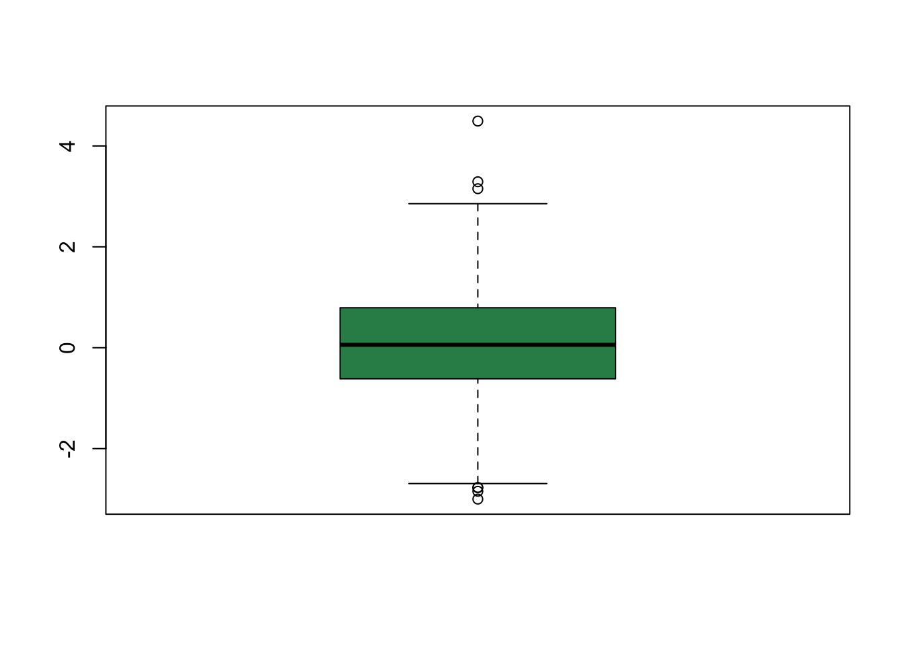

Although it is great to have data in R, we really want to do cool stuff with the data. So, let’s go over some of the basic descriptive statistics that we discussed in class.
Use the function mean() to calculate the mean of the data.
ben.data <- read.csv("../inst/extdata/lengthdata.csv")
mean(ben.data$Length)## [1] 4.75There is not a function in the base package to calculate the geometric mean. Below are two functions to calculate the geometric mean.
In the first function, we use the functions prod(),
which multiplies all the values in x together, and
length(), which determines how many values are in
x. Don’t confuse the function length() with
the name of the column, Length, in ben.data.
In the second function, the functions exp(),
mean(), and log(). They do what you would
expect.
geo.mean1 <- function(x){
prod(x)^(1/length(x))
}
geo.mean2 <- function(x){
exp(mean(log(x)))
}
geo.mean1(ben.data$Length)## [1] 4.187251geo.mean2(ben.data$Length)## [1] 4.187251There is also not a function in the base package to calculate the harmonic mean. Below is a functions to calculate the harmonic mean.
har.mean <- function(x){
length(x)/sum(1/x)
}
har.mean(ben.data$Length)## [1] 3.733333Use the function median() to calculate the mean of the data.
median(ben.data$Length)## [1] 4There is not a function in the base packages to calculate the mode. There is a function mode(), but it does something else. There are different home-made functions you can find on the web. Some are more complex than others and depend on extactly what you want to calculate. The reason for this is that the mode often depends on how you bin your data. Think about the widths of the bars on a histogram and recall that you can make many narrow bars or a few wider bars, which will affect the mode.
Typically people will just determine the mode visually with a histogram.
hist(ben.data$Length, col = "darkorchid4") #The mode is 3 if we use this histogram
However, if you are really just want to know the most common number in vector then you can use the following function.
mode <- function(x){
y <- sort(table(x),decreasing = T)
if(y[1] == y[2]) { #Test whether there is more than one mode
print("There is more than 1 mode. You should use a histogram to determine the mode")
} else { #If there is only 1 mode, tell the user the mode
as.numeric(names(y)[1])
}
}Use the function var() to calculate the variance of the data.
var(ben.data$Length)## [1] 7.071429Use the function sd() to calculate the standard deviation of the data.
sd(ben.data$Length)## [1] 2.659216There is not a function in the base packages to calculate the stanard error, but we can create a function to calculate the stardard error. This is because standard error is really a standard deviation (of the distribution of means).
se <- function(x) sd(x)/sqrt(length(x))
se(ben.data$Length)## [1] 0.9401748There is also no function for the cv. No problem, we can create our own function, just like we did for some of the means and standard error.
cv <- function(x) 100*(sd(x)/mean(x))
cv(ben.data$Length)## [1] 55.98349The function quantile() will calculate any quantile for you. By default the function calculates the min, lower quartile, median, upper quartile, and max values.
quantile(ben.data$Length)## 0% 25% 50% 75% 100%
## 2.0 3.0 4.0 5.5 10.0You can also change the default values to calculate other quantiles.
quantile(ben.data$Length, probs = c(0.1, 0.25, 0.33, 0.66, 0.75, 0.9))## 10% 25% 33% 66% 75% 90%
## 2.7 3.0 3.0 5.0 5.5 7.9There are a few more functions that can help you summarize data quickly in R. The summary() function will summarize the data for an entire data.frame.
summary(ben.data)## Salinity Length
## Length:8 Min. : 2.00
## Class :character 1st Qu.: 3.00
## Mode :character Median : 4.00
## Mean : 4.75
## 3rd Qu.: 5.50
## Max. :10.00The function boxplot() is a quick way to visual your data. By default, the box represent the upper and lower quartiles (0.75 and 0.25 quantiles), and the line inside the box represents the median (0.5 quantile). Now let me explain the whiskers–hold on to your pants. Let’s consider the upper whisker first. The upper whisker is determined by calculating the difference between the upper and lower quartiles (i.e., the height of the box, also called the interquartile range). Now if the max value is less than the interquartile range multiplied by 1.5 and added to the upper quartile, then the upper whisker represents the max value (and you will not see any additional data points). If the max value is greater than the interquartile range multiplied by 1.5 and added to the upper quartile, then the upper whisker represents the interquartile range multiplied by 1.5 and added to the upper quartile, and you will see the data that exceed the upper whisker. The lower whisker is plotted the same way but in reverse.
boxplot(ben.data$Length, col="orange")
Here is an example where the maximum and minimum values are more extreme than 1.5 the interquartile range. Notice you see data points above and below the whiskers.
boxplot(rnorm(1000), col = "seagreen")